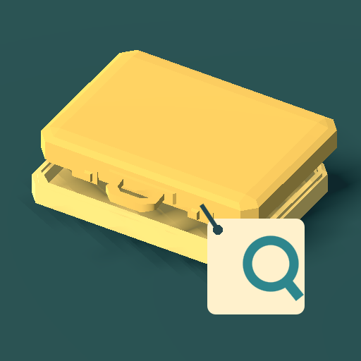

<- all projects

Lost & Found
PC
Volume
Live
Inspect lost objects, question their owners and solve a warm station mystery.
Maya Quint takes the night desk at Grand Meridian station. Her predecessor, Mr. Abernathy, vanished on his last day, leaving a notebook, forty years of lost things and a suitcase tagged: Do not open until she comes back. Listen to each owner, search the shelf and examine real 3D objects, turning them to read initials and check contents and receipts. People forget colours and exaggerate sizes, and scammers mix details from different objects. 30 story shifts follow a love story, a claim scam and a missing clerk, with 480 item records and a Museum of Lost Things filled by reunions.